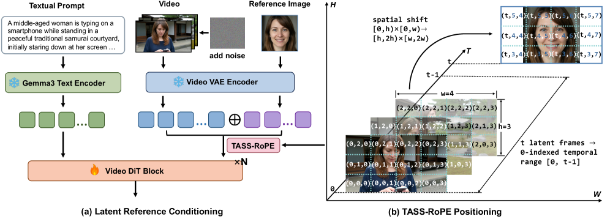

Identity-preserving video generation (IPVG) aims to synthesize high-fidelity videos that follow text prompts while faithfully preserving a reference identity. Despite recent progress, existing IPVG methods still struggle to balance high-level semantic control and low-level identity fidelity.
To bridge this gap, we propose ST-DRC, an effective Spatial-Temporal Decoupled Reference Conditioning framework for identity-preserving text-to-video generation. At the framework level, ST-DRC performs latent in-context feature injection by encoding the reference image with the video VAE and concatenating it with noisy video latents, enabling rich low-level identity details to be accessed without additional adapters. To separate identity-aware reference retrieval from appearance copying, we introduce TASS-RoPE, a Temporal-Adjacent Spatial-Shifted RoPE scheme that places reference tokens near the video sequence in time but shifts them in space, allowing reference information to flow through spatio-temporal attention while suppressing pixel-level copy-paste shortcuts.
To further prevent shortcut learning and strengthen the otherwise diluted identity supervision in the diffusion objective, we combine appearance-invariant reference augmentation with face-guided identity objectives, encouraging the model to preserve identity under variations in color, pose, and layout. At inference time, we introduce a three-stream reference classifier-free guidance strategy that independently controls text adherence and reference fidelity. Experiments demonstrate that ST-DRC achieves strong identity preservation, prompt alignment, temporal consistency, and video quality with a lightweight design built on LTX-2.3.

@article{chen2026spatial,
title={Spatial-Temporal Decoupled Reference Conditioning for Identity-Preserving Text-to-Video Generation},
author={Chen, Yuheng and Hu, Teng and Wang, Yuji and He, Qingdong and Ma, Lizhuang and Zhang, Jiangning},
journal={arXiv preprint arXiv:2606.02441},
year={2026}
}